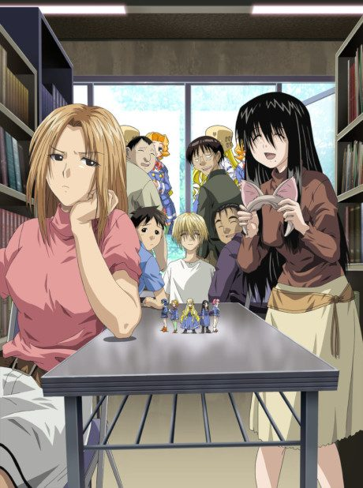

Genshiken
げんしけん
The anime takes the story to Unclear.
7.4AniList score
—Animeter, no votes yet
37episodes, 3 seasons
3 seasons, 37 episodes
In airing order. Episode numbers on this site count straight through every season, so season 2 starts at episode 13.
1
2004 · TV
Genshiken
Episodes1–1212 ep
2
2007 · TV
Genshiken 2
Episodes13–2412 ep
3
2013 · TV
Genshiken Second Generation
Episodes25–3713 ep
Films, OVAs and specials
Not counted in the episode numbers above.
·
2006 · OVA
Genshiken OVA
·
2013 · OVA
Genshiken Second Generation OVA
Sources: AniList